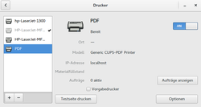
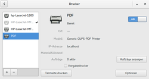

CUPS-PDF
Dieser Artikel wurde für die folgenden Ubuntu-Versionen getestet:
Ubuntu 16.04 Xenial Xerus
Ubuntu 14.04 Trusty Tahr
Zum Verständnis dieses Artikels sind folgende Seiten hilfreich:
 
CUPS-PDF

CUPS-PDF  ist ein Backend für den Druckdienst CUPS. Es handelt sich um ein Programm mit einer langen Tradition: bis einschließlich Ubuntu 8.04 war es standardmäßig vorinstalliert und wurde genutzt, um Dokumente programmunabhängig im PDF-Format drucken zu können. Ab Ubuntu 8.10 wurde es durch die Funktion gtkprint abgelöst, das zumindest bei GTK-basierenden Anwendungen eine Postscript- bzw. PDF-Datei direkt erzeugen kann. Dazu wird im Dialog "Drucken" der virtuelle Drucker "In Datei drucken" ausgewählt und das Ausgabeformat sowie der Name der Datei angegeben. Inzwischen enthält auch KDE eine entsprechende Funktion.
ist ein Backend für den Druckdienst CUPS. Es handelt sich um ein Programm mit einer langen Tradition: bis einschließlich Ubuntu 8.04 war es standardmäßig vorinstalliert und wurde genutzt, um Dokumente programmunabhängig im PDF-Format drucken zu können. Ab Ubuntu 8.10 wurde es durch die Funktion gtkprint abgelöst, das zumindest bei GTK-basierenden Anwendungen eine Postscript- bzw. PDF-Datei direkt erzeugen kann. Dazu wird im Dialog "Drucken" der virtuelle Drucker "In Datei drucken" ausgewählt und das Ausgabeformat sowie der Name der Datei angegeben. Inzwischen enthält auch KDE eine entsprechende Funktion.
Möchte man in wirklich allen Programmen PDF-Dateien erzeugen, bietet sich dennoch die zusätzliche Einrichtung von CUPS-PDF an. Im Gegensatz zu gtkprint steht CUPS-PDF auch in Java- und mittels Wine ausgeführten Windows-Anwendungen zur Verfügung. Es kann auch als virtueller Drucker in einem papierlosen Netzwerk genutzt werden, wenn man CUPS erlaubt, die lokal vorhandenen Drucker anderen Clients zur Verfügung zu stellen.
Installation¶
 Ab Ubuntu 16.04 installiert man das folgende Paket [1]:
Ab Ubuntu 16.04 installiert man das folgende Paket [1]:
printer-driver-cups-pdf (universe)
 mit apturl
mit apturl
Paketliste zum Kopieren:
sudo apt-get install printer-driver-cups-pdf
sudo aptitude install printer-driver-cups-pdf
bei älteren Ubuntu-Versionen dagegen:
cups-pdf (universe)
mit apturl
Paketliste zum Kopieren:
sudo apt-get install cups-pdf
sudo aptitude install cups-pdf
Verwendung¶
Bei der Installation wird automatisch ein neuer Drucker mit dem Namen "PDF-Drucker" angelegt. Zur Kontrolle und Konfiguration dienen je nach Desktop-Oberfläche unterschiedliche Werkzeuge:
Unity, GNOME 3: GNOME Druckerkonfiguration
MATE, LXDE, Xfce: system-config-printer
Auch im Browser kann CUPS-PDF verwaltet werden. Dazu gibt man die Internet-Adresse (URL) http://localhost:631/printers/ in die Adresszeile des Browsers ein. Nun werden alle installierten Drucker anzeigt.
Die Voreinstellungen sind in der Regel korrekt gesetzt. Kontrollieren sollte man dennoch das Papierformat (DIN A4) und bei Bedarf den DPI-Wert. In den meisten Fällen reicht eine Auflösung von 300 oder 600 dpi aus.
Dokumente werden in einem konfigurierbaren Verzeichnis gespeichert: früher per Vorgabe unter ~/PDF/, ab Ubuntu 10.10 direkt im Homeverzeichnis.
Konfiguration¶
 Nach jeder manuellen Änderung der Konfiguration muss CUPS neu gestartet werden:
Nach jeder manuellen Änderung der Konfiguration muss CUPS neu gestartet werden:
sudo service cups restart
oder alternativ:
sudo /etc/init.d/cups restart
Umbenennen des Druckers¶
Ein Ändern des Standardnamens "PDF-Drucker" ist nicht bei jeder Ubuntu-Variante ohne Weiteres möglich. Dann muss die Datei /etc/cups/printers.conf in einem Editor mit Root-Rechten [3] bearbeitet werden. Hier sucht man den Eintrag
<Printer "Name">
wobei Name durch den den aktuellen Druckernamen ersetzt werden muss. Dieser Name kann dann einfach ersetzt werden. Es dürfen aber keine Leerzeichen im Namen vorkommen. Alternativ kann die CUPS-Weboberfläche unter http://localhost:631/printers/ genutzt werden.
Ändern des Speicherorts¶
Wer den Ausgabeordner ändern möchte, muss die Datei /etc/cups/cups-pdf.conf in einem Editor mit Root-Rechten bearbeiten. Hier sucht man die Zeile mit
Out ${HOME}/PDFund ändert den Ausgabeordner (statt PDF) wie gewünscht ab.
Da CUPS durch AppArmor überwacht wird, ist noch ein zusätzlicher Eingriff erforderlich. Dazu die Datei /etc/apparmor.d/usr.sbin.cupsd in einem Editor mit Root-Rechten bearbeiten und in den Zeilen:
@{HOME}/PDF/ rw,
@{HOME}/PDF/* rw,ebenfalls den gewünschten Ausgabeordner zweimal (statt PDF) anpassen. Anschließend müssen AppArmor und CUPS neu gestartet werden:
sudo /etc/init.d/apparmor restart sudo /etc/init.d/cups restart
Überschreiben verhindern¶
Speziell bei Internetseiten kann es passieren, dass erstellte PDF-Dokumente immer wieder überschrieben werden. Hintergrund dieses Problems ist, dass als Dateiname von CUPS-PDF automatisch der Seitentitel benutzt wird. Wenn dieser nicht individuell gesetzt ist, wird eine bereits bestehende Datei mit dem gleichen Namen überschrieben.
Um das zu verhindern, wird die Datei /etc/cups/cups-pdf.conf mit Root-Rechten editiert und der folgende Eintrag wie folgt abgeändert:
### Key: Label ## label all jobs with a unique job-id in order to avoid overwriting old ## files in case new ones with identical names are created; always true for ## untitled documents ## 0: label untitled documents only ## 1: label all documents with a preceeding "job_#-" ## 2: label all documents with a tailing "-job_#" (version > 2.5 only) ### Default: 0 Label 1
Auch nach dieser Änderung muss CUPS neu gestartet werden. Damit wird in Zukunft jede erstellte PDF-Datei eindeutig benannt (nummeriert) und ein versehentliches Überschreiben verhindert.
Problemhebung¶
Erzeugte PDF-Dateien sind nicht durchsuchbar¶
Ab Ubuntu 11.04 ist die Nutzung von CUPS-PDF durch diverse Fehler (z.B. 820820, 942866) stark beeinträchtigt: PDF-Dateien sind unleserlich und/oder nicht mehr durchsuchbar, weil teilweise Text als Bild gespeichert wird. Abhilfe schafft das Herunterladen der nicht betroffenen älteren Version cups-pdf_2.5.0-17ubuntu1~lucid1  als einzelnes Paket, das anschließend manuell installiert werden muss [5].
als einzelnes Paket, das anschließend manuell installiert werden muss [5].
Damit die ältere Version nicht bei der nächsten Systemaktualisierung wieder überschrieben wird, sperrt man das Paket in der Paketverwaltung. Falls diese eine solche Option nicht kennt (z.B. im Falle des Software-Centers), weicht man auf die Kommandozeile bzw. ein Terminal aus:
echo cups-pdf hold | sudo dpkg --set-selections
Schwierigkeiten mit Apparmor¶
Wenn CUPS-PDF Probleme bereitet:
"... apparmor="DENIED" operation="mknod" parent=16861 profile="/usr/lib/cups/backend/cups-pdf" ..."
so hilft eine Ergänzung in /etc/apparmor.d/usr.sbin.cupsd:
capability mknod,
Anschließend wie oben beschrieben CUPS und AppArmor neu starten.
PDF/A-Erstellung¶
Möchte man das Ausgabeformat auf PDF/A (konkret PDF/A-1b) umstellen, editiert man die Datei /etc/cups/cups-pdf.conf mit Root-Rechten und passt folgende Zeile an (die entscheidende Änderung ist gelb markiert):
GSCall %s -q -dPDFA -dCompatibilityLevel=%s -dNOPAUSE -dBATCH -dSAFER -sDEVICE=pdfwrite -sOutputFile="%s" -dAutoRotatePages=/PageByPage -dAutoFilterColorImages=false -dColorImageFilter=/FlateEncode -dPDFSETTINGS=/prepress -c .setpdfwrite -f %s
Falls die Zeile mit einem # beginnt, dieses entfernen, um die Änderung zu aktivieren. Für eine Erläuterung der Parameter siehe Ghostscript.
Links¶
Druckwerkzeuge
 Programmübersicht
ProgrammübersichtDrucker
Übersicht zum ThemaHowto/CUPS-PDF mit Wasserzeichen und E-Mailversand via Thunderbird
- Erstellt mit Inyoka
-
 2004 – 2017 ubuntuusers.de • Einige Rechte vorbehalten
2004 – 2017 ubuntuusers.de • Einige Rechte vorbehalten
Lizenz • Kontakt • Datenschutz • Impressum • Serverstatus -
Serverhousing gespendet von